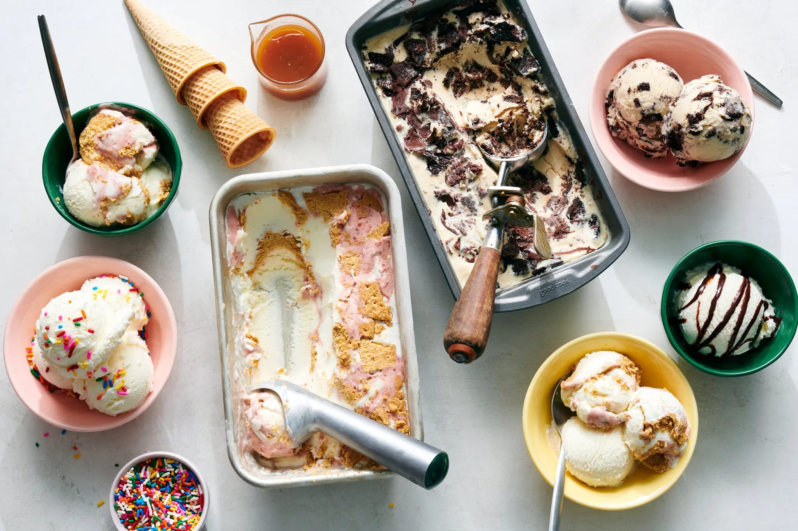
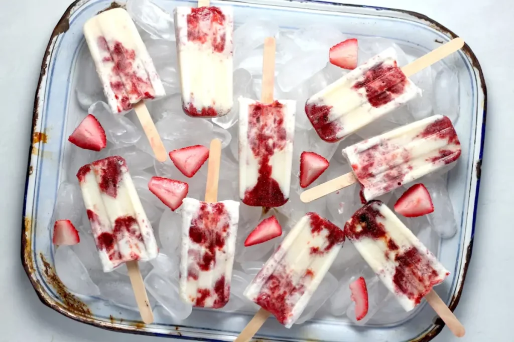
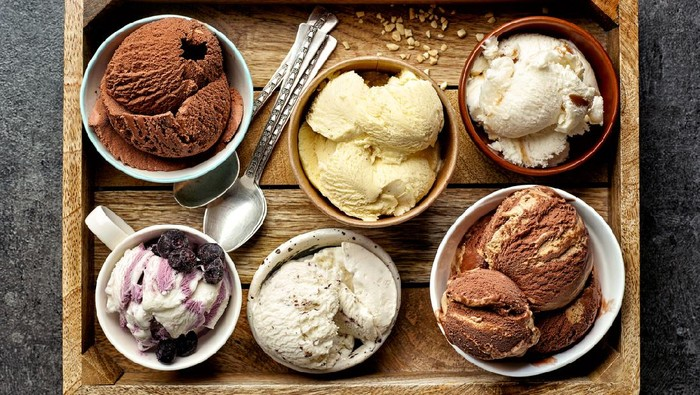
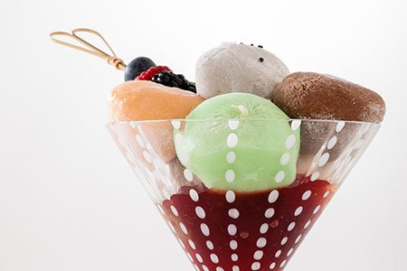

Blog

This Secret Ingredient Makes Homemade Ice Cream Easy
Read More...

Sejarah Es Krim di Dunia: Evolusi dari Salju Susu ke Gelato & Sorbet
Read More...

Kata Ahli Gizi soal Manfaat dan Risiko Konsumsi Es Krim Setiap Hari
Read More...

Some Fun Facts About Ice Cream That You Didn’t Know
Read More...